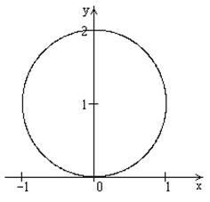

П 20.1 №19
Найдите множество точек комплексной плоскости, удовлетворяющих уравнению
Решение:
Искомое множество состоит из точек окружности единичного радиуса, центр которой имеет координаты .
Ответ:
